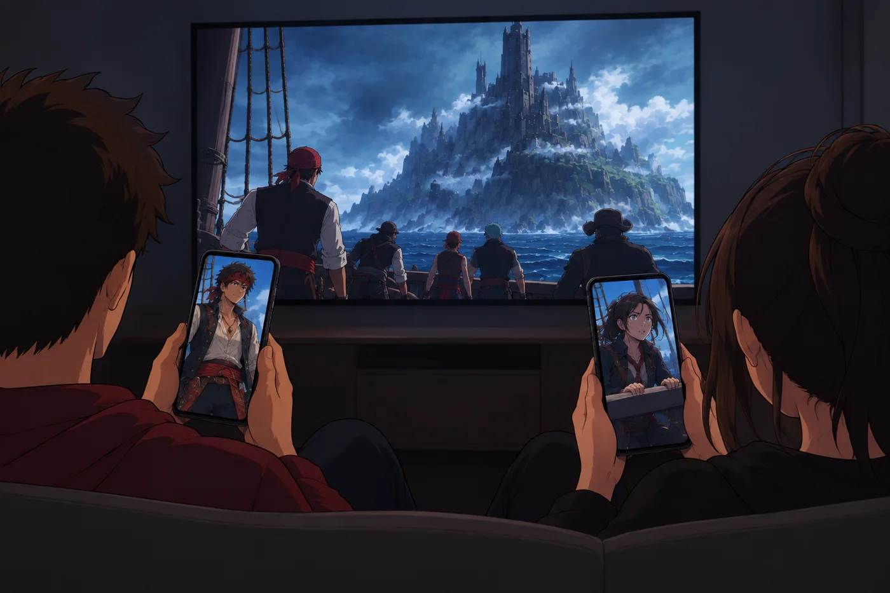
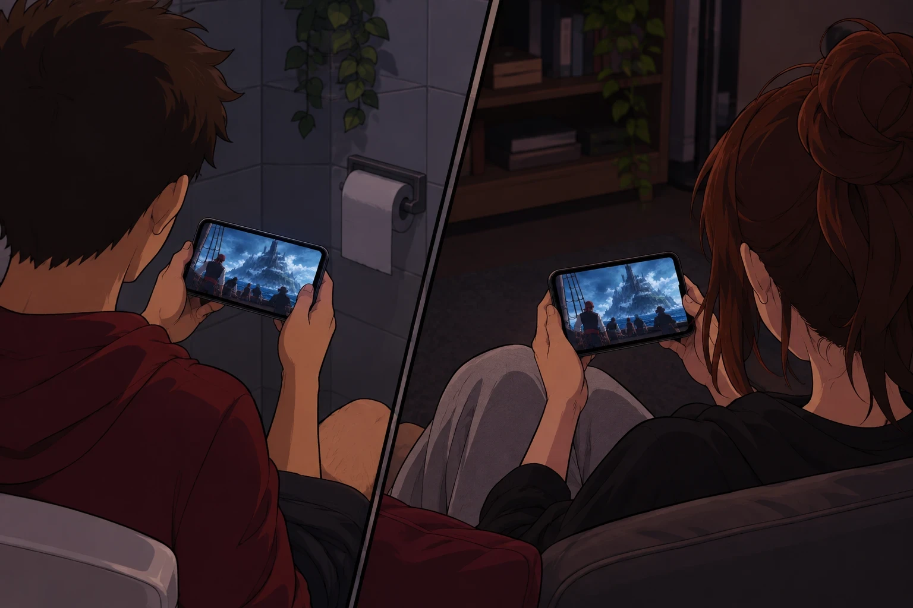
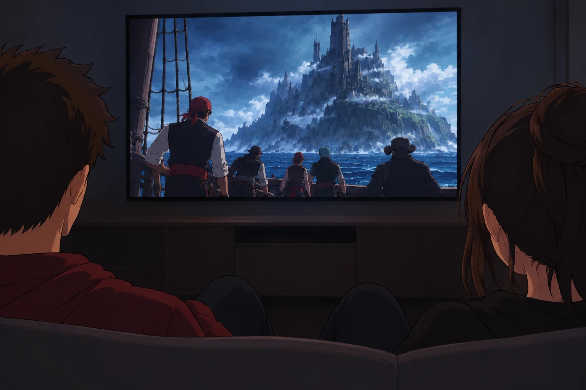
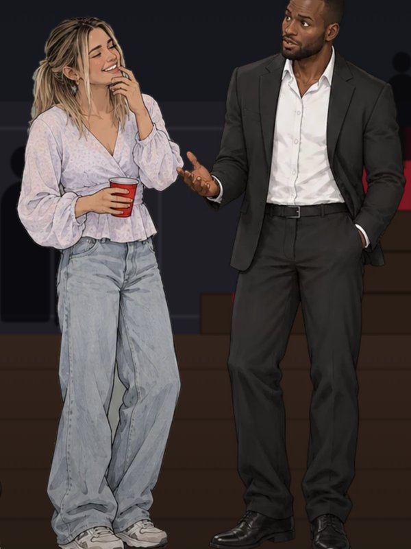
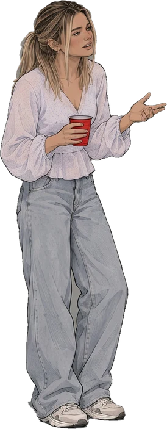
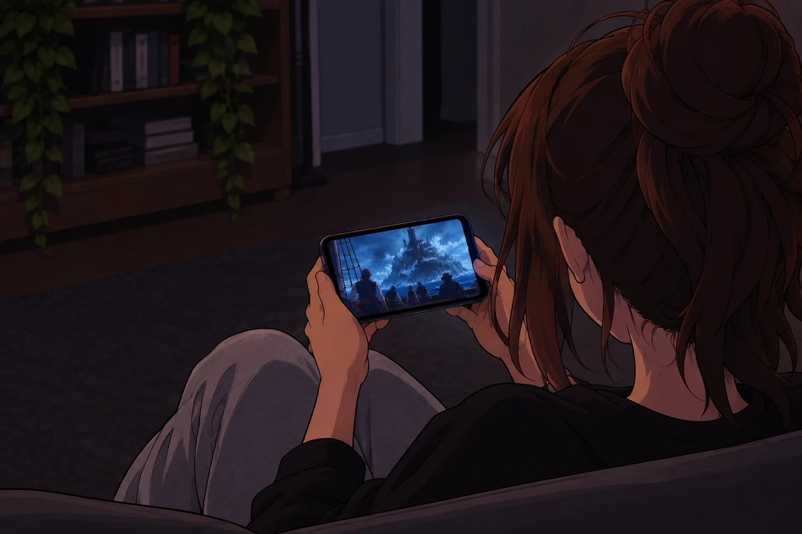

Toi et tes amis devenez les personnages. L'histoire se joue comme un épisode, et à chaque choix, l'un de vous décide de la suite.



Un nouveau, ou la suite du dernier. La télé devient l'écran, ton cell la télécommande.

Une photo, et ton ami est l'un des héros de l'histoire. Il bouge, il réagit, il a ses émotions.

Tous les 10 à 25 plans, l'un de vous choisit où va l'histoire. Même à distance : l'histoire suit chacun sur son cell.
L'histoire, c'est toi et tes amis. Tu ES le personnage.
Tu changes ce qui arrive. C'est toi qui l'as fait, pas le perso.
Vous la vivez ensemble, sur le même divan ou à distance.
Netflix ne fait aucun des trois.
Le moteur en tire une feuille de poses : il marche, rit, se fâche, trinque. Les poses resservent dans toutes les scènes, alors un nouveau perso ne coûte presque rien.
En 1080p. Vidéo générée par IA contre animation par feuilles de poses.
« Les gens ne veulent pas créer leur divertissement. Ils veulent qu'on le crée pour eux. »